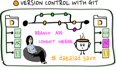
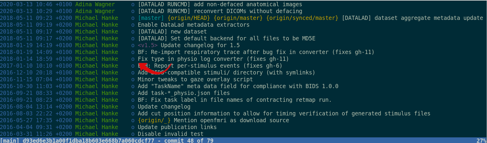
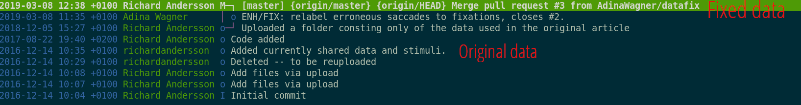
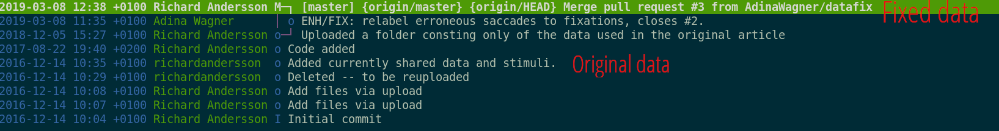
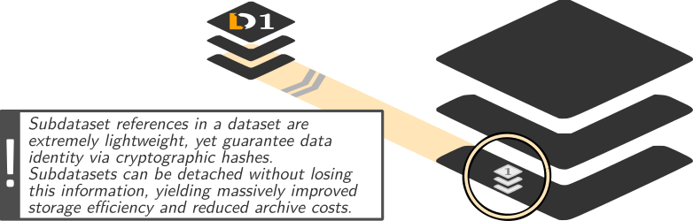

Data and Reproducibility Management with DataLad
Adina Wagner
 mas.to/@adswa
mas.to/@adswa |
|
|
Psychoinformatics lab,
Institute of Neuroscience and Medicine, Brain & Behavior (INM-7) Research Center Jülich |
Slides: DOI 10.5281/zenodo.7627723 (Scan the QR code)
Logistics
- Collaborative, public notes, networking, & anonymous questions at etherpad.wikimedia.org/p/love-your-data-datalad
-
We are using a JupyterHub at datalad-hub.inm7.de.
Your username is the email you registered with e.g., a.wagner@fz-juelich.de → a.wagner
You can log in with a password of your choice. - Format:
- Mostly hands-on: Watch me live-code, and try out the software yourself in the browser. Conceptual wrap-up at the end.
- Ask questions any time (But please mute yourself when you don't speak & make use of the "Raise hand" feature)
- Quick ☕-break after ~1 hour
Further resources and stay in touch
-
If you have questions after the workshop...
- Reach out to to the DataLad team via
- Matrix (free, decentralized communication app, no app needed). We run a weekly Zoom office hour (Tuesday, 4pm Berlin time) from this room as well.
- The development repository on GitHub
- Reach out to the (Neuro-) user community with
- A question on neurostars.org
with a
dataladtag - Find more user tutorials or workshop recordings
- On DataLad's YouTube channel
- In the DataLad Handbook
- In the DataLad RDM course
- In the Official API documentation
- In an overview of most tutorials, talks, videos at github.com/datalad/tutorials
Acknowledgements
|
Funders


Collaborators
|
Let's get to know each other
Please use your phone to scan to QR code, or open the link in a new browser windowA common usecase
|
How does Alice go about her daily job?
A common usecase
-
In her project, Alice likes to have an automated record of:
- when a given file was last changed
- where it came from
- what input files were used to generate a given output
- why some things were done.
- Even if she doesn't share her work, this is essential for her future self
- Her project is exploratory: Frequent changes to her analysis scripts
- She enjoys the comfort of being able to return to a previously recorded state
This is: *local version control*
A common usecase
-
Alice's work is not confined to a single computer:
- Laptop / desktop / remote server / dedicated back-up
- Alice wants to automatically & efficiently synchronize
-
Parts of the data are collected or analyzed by colleagues.
This requires:
- distributed synchronization with centralized storage
- preservation of origin & authorship of changes
- effective combination of simultaneous contributions
This is: *distributed version control*
A common usecase
- Alice applies local version control for her own work, and reproducibly records it
- She also applies distributed version control when working with colleagues and collaborators
-
She often needs to work on a subset of data at any given time:
- all files are kept on a server
- a few files are rotated into and out of her laptop
-
Alice wants to publish the data at project's end:
- raw data / outputs / both
- completely or selectively
This is: *data management (with DataLad 😀)*
DataLad
- Domain-agnostic command-line tool (+ graphical user interface), built on top of Git & Git-annex
- Major features:
- Version-controlling arbitrarily large content
- Version control data & software alongside to code!
- Transport mechanisms for sharing & obtaining data
- Consume & collaborate on data (analyses) like software
- (Computationally) reproducible data analysis
- Track and share provenance of all digital objects
- (... and much more)
Let's try it out
-
datalad-hub.inm7.de
- username:
- email without
@domain(a.wagner@fz-juelich.de -> a.wagner)
(must be the email you registered with for this workshop) - password:
- Set at first login, at least 8 characters
Important! The Hub is a shared resource. Don't fill it up :)
Git identity setup
Check Git identity:
git config --get user.name
git config --get user.email
Configure Git identity:
git config --global user.name "Adina Wagner"
git config --global user.email "adina.wagner@t-online.de"
Using DataLad in a terminal
Check the installed version:
datalad --version
For help on using DataLad from the command line:
datalad --help
The help may be displayed in a pager - exit it by pressing "q"
For extensive info about the installed package, its dependencies, and extensions, use
datalad wtf.
Let's find out what kind of system we're on:
datalad wtf -S system
Using datalad via its Python API
Open a Python environment:
ipython
Import and start using:
import datalad.api as dl
dl.create(path='mydataset')
Exit the Python environment:
exit
Datalad datasets...

...Datalad datasets
Create a dataset (here, with theyoda configuration, which adds
a helpful structure and configuration for data analyses): 
datalad create -c yoda my-analysis
Let's have a look inside. Navigate using
cd (change directory):
cd my-analysis
List the directory content, including hidden files, with
ls:
ls -la .
Version control...
...Version control
The yoda-configuration added a README placeholder in the dataset. Let's add Markdown text (a project title) to it:
echo "# My example DataLad dataset" > README.md
Now we can check the
status of the dataset:
datalad status
We can save the state with
save
datalad save -m "Add project title into the README"
Further modifications:
echo "Contains a small data analysis for my project" >> README.md
You can also checkout what has changed:
git diff
Save again:
datalad save -m "Add information on the dataset contents to the README"
...Version control
Now, let's check the dataset history:
git log
We can also make the history prettier:
tig
(navigate with arrow keys and enter, press "q" to go back and exit the program)
Convenience functions make downloads easier. Let's add code for a data analysis from an external source:
datalad download-url -m "Add an analysis script" \
-O code/classification_analysis.py \
https://raw.githubusercontent.com/datalad-handbook/resources/master/classification_analysis.py
Check out the file's history:
git log code/classification_analysis.py
Local version control
Procedurally, version control is easy with DataLad!

Advice:
- Save meaningful units of change
- Attach helpful commit messages
Computationally reproducible execution I...

- which script/pipeline version
- was run on which version of the data
- to produce which version of the results?
... Computationally reproducible execution I
A variety of processes can modify files. A simple example: Code formatting
black code/classification_analysis.py
Version control makes changes transparent:
git diff
But its useful to keep track beyond that. Let's discard the latest changes...
git restore code/classification_analysis.py
... and record precisely what we did
datalad run -m "Reformat code with black" \
"black code/classification_analysis.py"
let's take a look:
git show
... and repeat!
datalad rerun
Data consumption & transport...
...Data consumption & transport...
You can install a dataset from remote URL (or local path) usingclone.
Either as a stand-alone entity:
# just an example:
datalad clone \
https://github.com/psychoinformatics-de/studyforrest-data-phase2.git
Or as linked dataset, nested in another dataset in a superdataset-subdataset hierarchy:
# just an example:
datalad clone -d . \
https://github.com/psychoinformatics-de/studyforrest-data-phase2.git
- Helps with scaling (see e.g. the Human Connectome Project dataset )
- Version control tools struggle with >100k files
- Modular units improves intuitive structure and reuse potential
- Versioned linkage of inputs for reproducibility
...Dataset nesting
Let's make a nest!
Clone a dataset with analysis data into a specific
location ("input/") in the existing dataset,
making it a subdataset:
datalad clone --dataset . \
https://github.com/datalad-handbook/iris_data.git \
input/
Let's see what changed in the dataset, using the
subdatasets command:
datalad subdatasets
... and also
git show:
git show
We can now view the cloned dataset's file tree:
cd input
ls
...and also its history
tig
Let's check the dataset size (with the
du disk-usage command):
du -sh
Let's check the actual dataset size:
datalad status --annex
Let's check try to print the file contents into the terminal (
cat):
cat iris.csv
...Data consumption & transport
We can retrieve actual file content withget:
datalad get iris.csv
If we don't need a file locally anymore, we can
drop its content:
datalad drop iris.csv
No need to store all files locally, or archive results with
Giga/Terra-Bytes of source data:
dl.get('input/sub-01')
[really complex analysis]
dl.drop('input/sub-01')Git versus Git-annex
- Data in datasets is either stored in Git or git-annex
- By default, everything is annexed, i.e., stored in a dataset annex by git-annex

Git versus Git-annex
- Configurations (e.g., YODA), custom rules, or command parametrization determines if a file is annexed
- Storing files in Git or git-annex has distinct advantages:
| Git | git-annex |
| handles small files well (text, code) | handles all types and sizes of files well |
| file contents are in the Git history and will be shared upon git/datalad push | file contents are in the annex. Not necessarily shared |
| Shared with every dataset clone | Can be kept private on a per-file level when sharing the dataset |
| Useful: Small, non-binary, frequently modified, need-to-be-accessible (DUA, README) files | Useful: Large files, private files |
YODA configures the contents of the
code/
directory and the dataset descriptions (e.g., README files) to be in Git.
There are many other configurations, and you can also
write your own.
...Computationally reproducible execution...
Try to execute the downloaded analysis script. Does it work?cd ..
python code/classification_analysis.py- Software can be difficult or impossible to install (e.g. conflicts with existing software, or on HPC) for you or your collaborators
- Different software versions/operating systems can produce different results: Glatard et al., doi.org/10.3389/fninf.2015.00012
- Software containers encapsulate a software environment and isolate it from a surrounding operating system. Two common solutions: Docker, Singularity
...Computationally reproducible execution...
- The
datalad runcan run any command in a way that links the command or script to the results it produces and the data it was computed from - The
datalad reruncan take this recorded provenance and recompute the command - The
datalad containers-run(from the extension "datalad-container") can capture software provenance in the form of software containers in addition to the provenance that datalad run captures
...Computationally reproducible execution
With the
datalad-container extension, we can add software containers
to datasets and work with them.
Let's add a software container with Python software to run the script
datalad containers-add python-env --url shub://adswa/resources:2
inspect the list of registered containers:
datalad containers-list
Now, let's try out the
containers-run command:
datalad containers-run -m "run classification analysis in python environment" \
--container-name python-env \
--input "input/iris.csv" \
--output "pairwise_relationships.png" \
--output "prediction_report.csv" \
"python3 code/classification_analysis.py {inputs} {outputs}"
What changed after the
We can use
containers-run command has completed?
We can use
datalad diff (based on git diff):
datalad diff -f HEAD~1
We see that some files were added to the dataset!
And we have a complete provenance record as part of the git history:
And we have a complete provenance record as part of the git history:
git log -n 1
Publishing datasets...
 |
 |
We will use GIN: gin.g-node.org:

Publishing datasets...
- Create a GIN user account and log in: gin.g-node.org/user/sign_up
- Create and upload an SSH key to GIN
- Publish your dataset!

...Publishing datasets
DataLad has convenience functions to createsibling-repositories
on various infrastructure and third party services (GitHub, GitLab, OSF, WebDAV-based services, DataVerse, ...)
, to which data can then be published with push.
datalad create-sibling-gin example-analysis --access-protocol ssh
You can verify the dataset's siblings with the
siblings command:
datalad siblings
And we can push our complete dataset (Git repository and annex) to GIN:
datalad push --to gin

Using published data...
Let's see how the analysis feels like to others:
cd ../
datalad clone \
https://gin.g-node.org/adswa/example-analysis \
myclone
cd myclone
Get results:
datalad get prediction_report.csv
datalad drop prediction_report.csv
Or recompute results:
datalad rerun
Wrap-up: How does this relate to reproducibility?
Exhaustive tracking
- The building blocks of a scientific result are rarely static
| Data changes (errors are fixed, data is extended, naming standards change, an analysis requires only a subset of your data...) |

|
Exhaustive tracking
"Shit, which version of which script produced these outputs from which version of what data... and which software version?"


Exhaustive tracking
Once you track changes to data with version control tools, you can find out why it changed, what has changed, when it changed, and which version of your data was used at which point in time.



Digital provenance
- Have you ever saved a PDF to read later onto your computer, but forgot where you got it from? Or did you ever find a figure in your project, but forgot which analysis step produced it?
= "The tools and processes used to create a digital file, the responsible entity, and when and where the process events occurred"

Data transport: Security and reliability - for data
Decentral version control for data integrates with a variety of services to let you store data in different places - creating a resilient network for data "In defense of decentralized Research Data Management", doi.org/10.1515/nf-2020-0037Ultimate goal: Reusability
Teamscience on more than code: 

The YODA principles
DataLad Datasets for data analysis
- A DataLad dataset can have any structure, and use as many or few features of a dataset as required.
- However, for data analyses it is beneficial to make use of DataLad features and structure datasets according to the YODA principles:
- P1: One thing, one dataset
- P2: Record where you got it from, and where it is now
- P3: Record what you did to it, and with what
Why Modularity?
- 1. Reuse and access management
- 2. Scalability
- 3. Transparency
Original:
/dataset
├── sample1
│ └── a001.dat
├── sample2
│ └── a001.dat
...
Without modularity, after applied transform (preprocessing, analysis, ...):
/dataset
├── sample1
│ ├── ps34t.dat
│ └── a001.dat
├── sample2
│ ├── ps34t.dat
│ └── a001.dat
...
Why Modularity?
- 3. Transparency
Original:
/raw_dataset
├── sample1
│ └── a001.dat
├── sample2
│ └── a001.dat
...
/derived_dataset
├── sample1
│ └── ps34t.dat
├── sample2
│ └── ps34t.dat
├── ...
└── inputs
└── raw
├── sample1
│ └── a001.dat
├── sample2
│ └── a001.dat
...
Dataset linkage
$ datalad clone --dataset . http://example.com/ds inputs/rawdata
$ git diff HEAD~1
diff --git a/.gitmodules b/.gitmodules
new file mode 100644
index 0000000..c3370ba
--- /dev/null
+++ b/.gitmodules
@@ -0,0 +1,3 @@
+[submodule "inputs/rawdata"]
+ path = inputs/rawdata
+ url = http://example.com/importantds
diff --git a/inputs/rawdata b/inputs/rawdata
new file mode 160000
index 0000000..fabf852
--- /dev/null
+++ b/inputs/rawdata
@@ -0,0 +1 @@
+Subproject commit fabf8521130a13986bd6493cb33a70e580ce8572
Take home messages
- Data deserves version control
- It changes and evolves just like code, and exhaustive tracking lays a foundation for reproducibility
- Reproducible science relies on good data management
- But effort pays off: Increased transparency, better reproducibility, easier accessibility, efficiency through automation and collaboration, streamlined procedures for synchronizing and updating your work, ...
- DataLad can help with some things
- Have access to more data than you have disk space
- Who needs short-term memory when you can have automatic provenance capture?
- Link versioned data to your analysis at no disk-space cost
- ...
Scalability
FAIRly big setup

-
Exhaustive tracking
- datalad-ukbiobank extension downloads, transforms & track the evolution of the complete data release in DataLad datasets
- Native and BIDSified data layout (at no additional disk space usage)
- Structured in 42k individual datasets, combined to one superdataset
- Containerized pipeline in a software container
- Link input data & computational pipeline as dependencies
Wagner, Waite, Wierzba et al. (2021). FAIRly big: A framework for computationally reproducible processing of large-scale data.
FAIRly big workflow


-
portability
- Parallel processing: 1 job = 1 subject (number of concurrent jobs capped at the capacity of the compute cluster)
- Each job is computed in a ephemeral (short-lived) dataset clone, results are pushed back: Ensure exhaustive tracking & portability during computation
- Content-agnostic persistent (encrypted) storage (minimizing storage and inodes)
- Common data representation in secure environments
Wagner, Waite, Wierzba et al. (2021). FAIRly big: A framework for computationally reproducible processing of large-scale data.
FAIRly big provenance capture

-
Provenance
- Every single pipeline execution is tracked
- Execution in ephemeral workspaces ensures results individually reproducible without HPC access
Wagner, Waite, Wierzba et al. (2021). FAIRly big: A framework for computationally reproducible processing of large-scale data.
Thank you for your attention!
Slides: DOI 10.5281/zenodo.7627723 (Scan the QR code)

|
Women neuroscientists are underrepresented in neuroscience. You can use the Repository for Women in Neuroscience to find and recommend neuroscientists for conferences, symposia or collaborations, and help making neuroscience more open & divers. |
Command summaries
Summary - Local version control
datalad createcreates an empty dataset.- Configurations (-c yoda, -c text2git) add useful structure and/or configurations.
- A dataset has a history to track files and their modifications.
- Explore it with Git (git log) or external tools (e.g., tig).
datalad saverecords the dataset or file state to the history.- Concise commit messages should summarize the change for future you and others.
datalad download-urlobtains web content and records its origin.- It even takes care of saving the change.
datalad statusreports the current state of the dataset.- A clean dataset status (no modifications, not untracked files) is good practice.
Summary - Dataset consumption & nesting
datalad cloneinstalls a dataset.- It can be installed “on its own”: Specify the source (url, path, ...) of the dataset, and an optional path for it to be installed to.
- Datasets can be installed as subdatasets within an existing dataset.
- The --dataset/-d option needs a path to the root of the superdataset.
- Only small files and metadata about file availability are present locally after an install.
- To retrieve actual file content of annexed files,
datalad getdownloads file content on demand. - Datasets preserve their history.
- The superdataset records only the version state of the subdataset.
Summary - Reproducible execution
datalad runrecords a command and its impact on the dataset.- All dataset modifications are saved - use it in a clean dataset.
- Data/directories specified as
--inputare retrieved prior to command execution. - Use one flag per input.
- Data/directories specified as
--outputwill be unlocked for modifications prior to a rerun of the command. - Its optional to specify, but helpful for recomputations.
datalad containers-runcan be used to capture the software environment as provenance.- Its ensures computations are ran in the desired software set up. Supports Docker and Singularity containers
datalad reruncan automatically re-execute run-records later.- They can be identified with any commit-ish (hash, tag, range, ...)